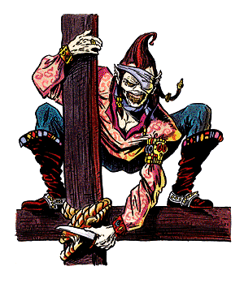

Gith, Pirate

CLIMATE/TERRAIN:
| Wildspace
|
FREQUENCY:
| Rare
|
ORGANIZATION:
| Ship/Military
|
ACTIVITY CYCLE:
| Any
|
DIET:
| Carnivore
|
INTELLIGENCE:
| Exceptional (15-16)
|
TREASURE:
| A (N)
|
ALIGNMENT:
| Lawful evil
|
NO. APPEARING:
| 20-40/As ship crew
|
ARMOR CLASS:
| 0
|
MOVEMENT:
| 12
|
HIT DICE:
| 7-11
|
THAC0:
| Special
|
NO. OF ATTACKS:
| Varies
|
DAMAGE/ATTACK:
| By weapon
|
SPECIAL ATTACKS:
| See below
|
SPECIAL DEFENSES:
| See below
|
MAGIC RESISTANCE:
| Nil
|
SIZE:
| M (6'-7' tall)
|
MORALE:
| Champion (16)
|
XP VALUE:
| Special
|
When the githyanki, under their liberator, Gith, freed themselves from the
yoke of mindflayer slavery, this branch of the race fled not to the Astral plane,
but to arcane space.
Tall, emaciated beings, the pirates of Gith appear as almost skeletal
humanoids with skin varying from dirty gray to dull yellow. Long, dingy-brown hair
flows down their backs and over the ornate, bejeweled arms and armor they prefer to
use.
Combat: The pirates of Gith can operate as fighters, mages, or fighter/mages, with
limits of 11 in each class. Typically, the highest-level fighter captains the
ship. This frees all the mages (single-and multiclassed) for spelljamming or combat
duty.
Clerics of Gith are occasionally encountered as well (limit of 11th level).
Rarely, a fighter/cleric is encountered, almost always as the captain of its ship.
When closing with a foe, the pirates use spells and any armament their ship
possesses. In melee, they use a variety of weapons, with swords predominating.
Operating from small bases hidden on asteroids, the pirates strive to capture
any ship that is larger, faster, or better armed than theirs. They feverishly
attempt to capture any elven-made ships that come their way (see below). As a
result, many elven armadas post large bounties on the heads of Gith pirates.
The pirates' greatest fury is reserved for the illithids, however. The pirates
of Gith spare no expense to kill all mindflayers they find. No Gith pirate
ever uses a captured illithid ship.
A ship's complement varies, but these numbers are a general guideline:
1 Captain (highest-level fighter or fighter/cleric)
1 Mate (highest-level fighter/mage or cleric)
1 Chief Spelljammer or Warlock (highest-level mage)
The rest of the crew is evenly divided among the three common class
possibilities.
Habitat/Society: The pirate philosophy carries over into all aspects of life. The strongest
take what they want. Each ship is very important to its crew, as it is the primary
factor in determining the pecking order in a settlement. This explains the
pirates' constant quest for better ships. Each settlement is ruled by force by its
best ship, or a coalition of the best ships.
Extreme isolationists, the pirates of Gith live with no other races -- they
may even try to commit genocide on a race that settles too close to them. Over
all, despite being pirates, these Gith live a structured, militaristic lifestyle.
Every adult member of this race possesses the following magical abilities,
each usable three times a day: astral spell, plane shift, and ESP. All function as the spell of the same name (as cast by the lowest-level
caster possible). These inherent abilities also enable the pirates to pilot ships
with series helms. These abilities function only in wildspace, not in the
phlogiston.
The most dangerous aspect of this race is the combination of the above
abilities, the properties of major and minor spelljamming helms, and the unique
organic structure of the elven-made ships. When a Gith pirate is at the helm of an
elven-made ship (flitter, etc.), he may use his plane shift and astral spell abilities to shunt the entire ship, and all its contents, to the Astral plane
(this uses up that pirate's astral spell and plane shift abilities for the day). This gives the pirates an escape route, and it
enables them to wait in known shipping lanes, astrally hidden, before returning to
the Prime Material plane to launch an attack. The Gith pirates can use only
elven-made ships of less than 50 tons in this manner.
This special maneuver only works in wildspace, not in the phlogiston. That is
certainly the reason the Gith pirates never pursue prey into that medium.
Ecology: The Gith pirates are carnivores, pure and simple. They do not care what state,
short of putrefied, the meat is in. Some of the pirate bands also engage in
cannibalism.
Index